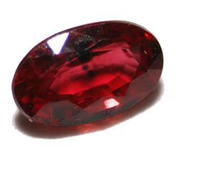

RUBBY

ABOUT:
A ruby is a pink to blood-red colored gemstone, a variety of the mineral corundum (aluminium oxide). Other varieties of gem-quality corundum are called sapphires. Ruby is one of the traditional cardinal gems, together with amethyst, sapphire, emerald, and diamond.[3] The word ruby comes from ruber, Latin for red. The color of a ruby is due to the element chromium.
Some gemstones that are popularly or historically called rubies, such as the Black Prince's Ruby in the British Imperial State Crown, are actually spinels. These were once known as "Balas rubies".
The quality of a ruby is determined by its color, cut, and clarity, which, along with carat weight, affect its value. The brightest and most valuable shade of red called blood-red or pigeon blood, commands a large premium over other rubies of similar quality. After color follows clarity: similar to diamonds, a clear stone will command a premium, but a ruby without any needle-like rutile inclusions may indicate that the stone has been treated. Ruby is the traditional birthstone for July and is usually pinker than garnet, although some rhodolite garnets have a similar pinkish hue to most rubies. The world's most valuable ruby is the Sunrise Ruby.